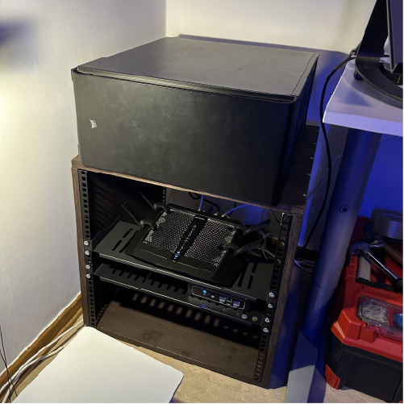

About
I am a Swedish electronics and computer engineering graduate at KTH, the Royal Institute of Technology in Stockholm.
I have a deep interest in tech; be it messing around with Linux servers, building my own cpu using Verilog, creating websites, writing scripts, or AI.
I am still trying to figure out what I should specialize in. To see my projects I have created at school, work, or personal, check out my Github
Experience
Hired as a QA test analyst student worker, responsible for writing tests and automation scripts for Nasdaq internal and external systems in the European Markets.
Currently on ice. Started RE-DO in June 2020 to complement my studies. We help clients rethink their company image through marketing consulting, logo design, and web design.
Hired as a data center technician intern responsible for maintenance of AWS’s servers in Eskilstuna, Sweden. Worked with a hardware responsible for services such as S3, EC2, and VPC. I was also taught how to manage these technologies on the software side.
I studied at KTH for 4 years, during the education I decided to take a couple of extra courses in Computer Science, I am due to present my thesis in fall of 2024. Having finished all my courses in May 2024.
A think tank I took over to promote, educate, and expand the horizon of blockchain technology and its applications. I dealt with long-term strategic planning, corporate relations, spokesperson for the organization, and recruitment, among others.
Other
I also have a blog, where I write my views on tech, society, and everything else in between.
This website is hosted on my Raspberry Pi 5 using NGINX, lets encrypt, and cloudflare.
$ whereami
